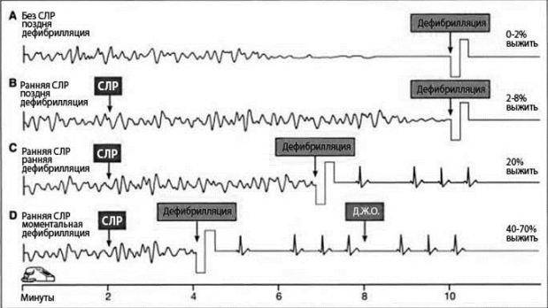
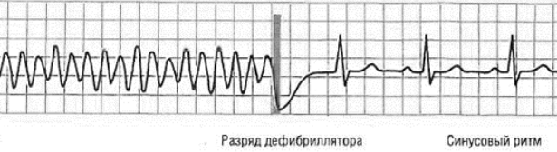
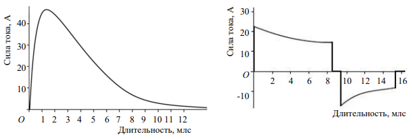
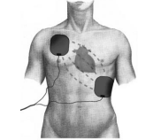
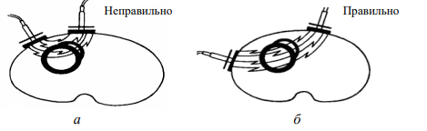

ЭДС и правила ее проведения.
Показаниями к электрической дефибрилляции сердца являются:
1) желудочковая тахикардия без пульса;
2) фибрилляция желудочков.
При ФЖ (ЖТ без пульса) рекомендуется как можно более ранняя дефибрилляция. Выживаемость пациентов, которым она была проведена в первые 3 мин с момента остановки кровообращения, составляет 74 %. С задержкой вероятность успеха уменьшается на 10 % каждую минуту (рис. 26).

Рисунок 26. Эффективность ранней дефибрилляции.
Смысл дефибрилляции заключается в деполяризации критической массы миокарда, понуждающей к восстановлению синусового ритма естественным водителем ритма (так как клетки пейсмекера синусового узла являются первыми клетками миокарда, способными деполяризоваться спонтанно). Таким образом, дефибрилляция не «запускает» сердце; разряд вызывает временную асистолию (деполяризацию всех клеток миокарда), во время которой возобновляется активность естественных водителей ритма (рис. 27).

Рисунок 27. Фибрилляция желудочков и восстановление ритма разрядом дефибриллятора
Эффективность и безопасность электрической дефибрилляции зависят от
целого ряда факторов, среди которых наибольшее значение имеют
следующие:
1) форма импульса и энергия разряда;
2) расположение электродов на грудной клетке;
3) сопротивление грудной клетки, или трансторакальный импеданс;
4) время нанесения разряда;
5) последовательность разрядов.
Форма импульса и энергия разряда. По форме генерируемого импульса различают моно- и двухфазные дефибрилляторы. Монофазные генерируют монополярный импульс (однонаправленный электрический ток). Наиболее распространена монофазная затухающая синусоидальная волна тока, которая постепенно уменьшается до нуля (рис. 28, а).
Сейчас монофазные дефибрилляторы не производятся, хотя продолжают использоваться. Сегодня отдается предпочтение двухфазным приборам, введенным в практику в 90-х гг. ХХ в. Они генерируют ток, который определенное время имеет положительные значения, затем инвертируется в сторону отрицательных, составляющих по продолжительности около половины от общей длительности разряда (рис. 28, б).
Современные двухфазные дефибрилляторы компенсируют колебания трансторакального импеданса посредством электронной регулировки величины и продолжительности импульса.

Рисунок 28. Форма импульса тока: а – монофазного дефибриллятора; б – двухфазного дефибриллятора
В случае продолжительной ФЖ (ЖТ) эффективность первого разряда выше при использовании двухфазной формы импульса, чем монофазной. Кроме того, установлено, что двухфазный импульс оказывает меньшее повреждающее влияние на миокард.
Все ручные дефибрилляторы должны иметь наклейку с указателем формы импульса (монофазный или двухфазный) и оптимальных уровней энергии для выполнения дефибрилляции. Рекомендуемая в настоящее время энергия первого разряда для монополярного импульса должна составлять 360 Дж. Такую же энергию необходимо иметь и всем последующим разрядам. Изменение величины энергии первого разряда при использовании Сила тока, А 40 30 20 10 О 1 2 3 4 5 6 7 8 9 10 11 12 Длительность, млс Сила тока, А 30 20 10 О -10 2 4 6 8 10 12 14 16 Длительность, млс монофазных дефибрилляторов было принято Европейским советом по реанимации взамен тактики «200–300–360 Дж», распространенной ранее. Это связано с тем, что высокая энергия разряда, несмотря на риск повреждения миокарда, с большей вероятностью восстанавливает ритм, что является решающим условием успеха реанимации.
Максимально действенное значение энергии первого разряда при использовании биполярного импульса зависит от его формы и колеблется от 150 до 200 Дж. Обычно производители указывают на лицевой панели двухфазного дефибриллятора оптимальную величину, соответствующую данной форме импульса. Если человек, работающий с дефибриллятором, не знает эффективного диапазона энергии данного устройства, то для выполнения первого разряда следует использовать уровень 200 Дж.
Расположение электродов на грудной клетке. Доказано, что только 4% трансторакального тока проходит через сердце, а 96% – через остальные структуры грудной клетки, поэтому адекватное расположение электродов является очень важным. При передне-переднем расположении один электрод устанавливается у правого края грудины под ключицей, второй – латеральнее левого соска по срединно-подмышечной линии (рис. 29).

Рисунок 29. Расположение электродов при дефибрилляции.
При передне-заднем расположении один электрод прикладывается медиальнее левого соска, другой – под левую лопатку. Установка электрода на уровне среднеключичной линии приводит к неравномерному распределению электрической энергии в миокарде, что снижает эффективность дефибрилляции и усугубляет постреанимационную миокардиальную дисфункцию (рис. 30).

Рисунок 30. Прохождение тока: а – при близком расположении пластин дефибриллятора; б – нормальном расположении
У женщин левый электрод располагается левее латерального края молочной железы (нельзя устанавливать электрод на молочную железу, так как это резко снижает эффективность разряда). Если у пациента имеется Неправильно Правильно имплантированный кардиостимулятор, электроды дефибриллятора должны находиться от него на расстоянии 6–10 см.
Сопротивление грудной клетки, или трансторакальный импеданс. Трансторакальный импеданс имеет большое клиническое значение, поскольку может обусловить несоответствие между энергий, набираемой на шкале аппарата и выделяемой на пациента. Так, значительное повышение сопротивления грудной клетки (например, при использовании «сухих» электродов) при установленной на шкале дефибриллятора энергии 360 Дж приводит к снижению ее реальной величины на миокарде до 30–40 Дж. Трансторакальный импеданс зависит от массы тела и у взрослого человека в среднем равняется 70–80 Ом. Для его уменьшения дефибрилляцию необходимо совершать в фазу выдоха. Это объясняется тем, что сопротивление грудной клетки в этих условиях снижается. Оптимальное усилие, прикладываемое на электроды, равно 8 кг для взрослых и 5 кг для детей в возрасте 1–8 лет.
Основную часть трансторакального импеданса оказывает кожа, причем сопротивление сухой кожи на порядок выше, чем влажной, поэтому главным для его снижения является обеспечение хорошего контакта между кожей и электродами за счет применения токопроводящих растворов. Использование «сухих» электродов существенно снижает эффективность дефибрилляции и вызывает ожоги. Для уменьшения электрического сопротивления грудной клетки применяют электропроводный гель или марлю, смоченную гипертоническим раствором. В крайнем случае поверхность электрода можно увлажнить водой. В последнее время выпускают специальные самоклеящиеся прокладки для электродов.
Как уже отмечалось, некоторые современные дефибрилляторы имеют функцию компенсации влияния импеданса и позволяют нанести на область сердца разряд, близкий к установленному пользователем. Приборы с данной технологией определяют межэлектродное сопротивление в момент нанесения импульса и затем, в зависимости от значений импеданса, корректируют величину напряжения, для того чтобы реальная энергия разряда соответствовала заданной.
Размер электродов. Оптимальный диаметр электродов составляет 11–12 см. Однако до настоящего времени еще выпускаются дефибрилляторы с электродами диаметром 8 см. Их использование не рекомендуется, так как они не обеспечивают адекватного охвата электрическим полем необходимой массы миокарда. Сейчас во многих странах применяются так называемые мягкие, наклеиваемые, электроды. Последние имеют целый ряд преимуществ по сравнению с жесткими: они обеспечивают хороший контакт «кожа – электрод», освобождают руки реаниматора, уменьшая тем самым «интервалы выключенных рук», и позволяют непрерывно мониторировать ЭКГ.
Во время дефибрилляции никто из участников реанимации не должен касаться кожных покровов больного и (или) его кровати!
Время нанесения разряда. В соответствии с концепцией ранней дефибрилляции в конце 1990-х – начале 2000-х гг. ее рекомендовалось выполнять как можно раньше, т. е. до проведения этапов реанимации А, В, С и D. Однако исследованиями последних лет установлено, что, если до начала электрической дефибрилляции при ФЖ прошло более 3–4 мин, в функциональном состоянии кардиомицитов происходят нарушения в виде уменьшения в миокарде АТФ, гиперпродукции лактата и клеточной аккумуляции Na+ , что ведет к снижению сократительной функции сердечной мышцы. Дефибрилляция при этом может вызвать дополнительное электроповреждение структур миокарда, которое отрицательно влияет на эффективность метода. Было показано, что выполнение дефибрилляции у пациентов с нелеченой ФЖ длительностью более 4–5 мин почти в 60 % случаев конвертирует ритм в асистолию, тогда как вторичная постконверсионная асистолия по сравнению с первичной имеет более неблагоприятный прогноз и низкий уровень выживаемости (0–2 %).
Согласно последним рекомендациям, если с момента возникновения ФЖ прошло менее 3 мин, необходимо проведение дефибрилляции до начала этапов реанимации А, В и С. Если же после остановки сердца прошло более 3 мин или это время неизвестно, то нужно осуществлять базовую СЛР в течение 2 мин с последующим применением электрической дефибрилляции.
Последовательность разрядов. В современных алгоритмах дефибрилляции Европейского совета по реанимации (2010 и 2015 гг.) рекомендуется нанесение одного разряда взамен стратегии трех последовательных разрядов от 2000 г. В случае не восстановления после дефибрилляции самостоятельного кровообращения проводят базовый комплекс СЛР в течение 2 мин (3–4 цикла «компрессия – вентиляция»). После этого наносят второй разряд и в случае его неэффективности цикл повторяют. Изменение концепции связано с тем, что, согласно последним данным, перерыв в выполнении компрессий резко снижает результативность СЛР. После каждого разряда немедленно возобновляют массаж сердца, на фоне которого оценивают сердечный ритм. Количество разрядов для устранения рефрактерной (особенно быстро рецидивирующей) ФЖ не ограничено, если реанимационные мероприятия начаты своевременно и остается надежда на нормализацию сердечной деятельности.
Техника проведения наружной электрической дефибрилляции.
1. Включить энергопитание.
2. Установить по шкале требуемый заряд (360 Дж при использовании дефибриллятора с монофазным импульсом и 200 Дж – с бифазным).
3. Смазать пластины электродной пастой.
4. Установить пластины на грудной клетке: одну – справа от верхней части грудины ниже правой ключицы, вторую – чуть ниже и слева от левого соска.
5. Зарядить электроды.
6. Пластины плотно прижать к грудной стенке, чтобы уменьшить объем легких и электрическое сопротивление.
7. Подтвердить ЭКГ диагноз ФЖ или ЖТ, если возможно.
8. Подать команду: «Всем отойти от больного!»
9. Произвести дефибрилляцию нажатием соответствующих выключателей.
10. Немедленно возобновить массаж сердца.
11. Провести 3–4 цикла «компрессия – вентиляция».
12. Определить ЭКГ-ритм.
При проведении дефибрилляции перерывы в проведении массажа сердца должны быть минимальными не более 10 с, с этой целью в рекомендациях ЕСР 2015 года сделан упор на использование клеящихся электродов.
При выборе ручного дефибриллятора желательно отдать предпочтение
приборам со следующими характеристиками:
– бифазная форма импульса;
– возможность регистрации ЭКГ с пластин дефибриллятора;
– диаметр электродов 11–12 см;
– наличие функции синхронизированной кардиоверсии;
– наличие клеящихся электродов;
– возможность автоматической дефибрилляции.
Наиболее частые ошибки во время проведения дефибрилляции:
а) неправильное расположение электродов (левый электрод над
верхушкой сердца, у женщин – на левой груди);
б) плохой контакт «кожа – электрод»;
в) использование электродов маленького диаметра (8 см).